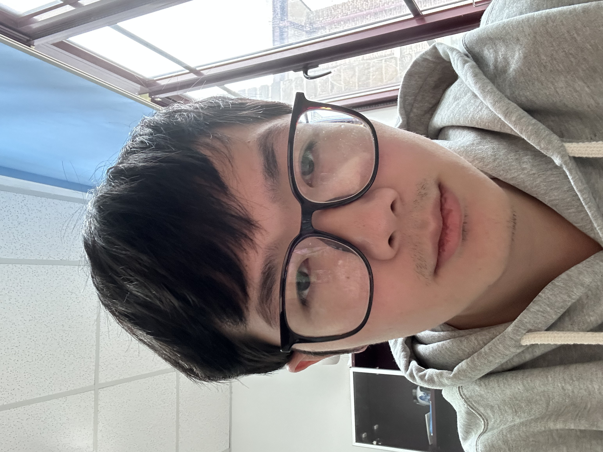
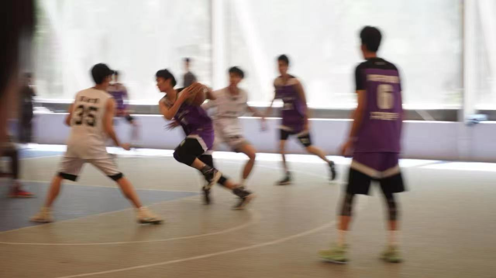
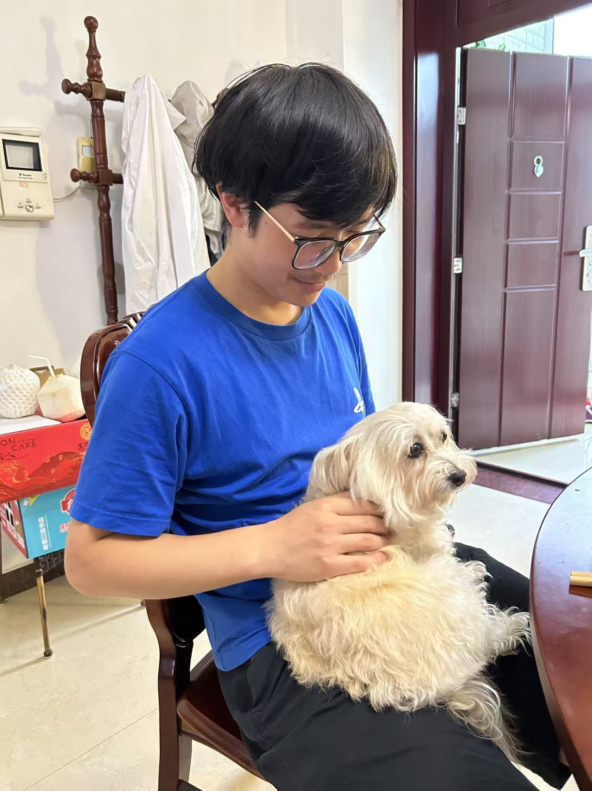

Personal information
Nankai University
Phone: +86-15862816989
Email: yuboshi@mail.nankai.edu.cn
Hobbies: Playing Basketball; Cooking; Pull-up coffee; Fishing; Playing computer games
Education
- 2021 - on: PhD , Nankai university, Supervised by Prof. Zhi Song
- Non-Hermitian topology; Exceptional point dynamics.
- Quantum phase transition and dynamical quantum phase transition.
- Topological insulators and superconductors.
- 2024.1 - 2024.8: Visiting PhD, Max Planck Institute for the Physics of Complex Systems (MPIPKS), Supervised by Dr. Marin Bukov
- Active Matter; Hamiltonian description for the non-reciprocal system.
- 2017 - 2021: BSc, Nankai university, Supervised by Prof. Zhi Song
- Dynamical magnetization.
Research interests
Nankai
During my PhD at Nankai University, my research mainly focus on the topological phase of matter, Majorana fermions, and quantum many-body dynamics. Research is centered around the following questions:
- What happens when Non-Hermitian meets topology? It is well known that, due to the Non-Hermitian Skin Effect (NHSE), the distinction between edge and bulk states becomes blurred, and the conventional bulk-boundary correspondence (BBC) is lost in some systems. We aim to investigate how the non-Hermitian terms can benefit us compared to their Hermitian counterparts when the BBC holds. Additionally, for systems that lose the BBC, we seek to understand how it can be restored. In particular, what is the fate of Majorana fermions in non-Hermitian superconducting systems?
- What happens when quantum dynamics meets quantum phase transition (QPT)? On the one hand, Dynamical quantum phase transition (DQPT), as a time analogy to equilibrium phase transitions, has been extensively studied. We aim to extend this concept to higher-dimensional systems. Additionally, we try to identify a series of (time-dependent) observables or order parameters that exhibit similar characteristics and to uncover the underlying mechanisms behind them. On the other hand, we aim to explore the potential applications of exceptional point (EP) dynamics, such as generating target states, QPT at finite temperature and so on.
PKS
During my visit to PKS, I learned about many topics in quantum physics and biophysics, such as lattice gauge theory, quantum circuits, and active matter. In the end, we worked on creating a reciprocal Hamiltonian extension for any equation of motion with nonreciprocal pairwise interactions. We will upload the results to arXiv as a letter soon.
Future
In the future, I will continue with my current work, as it deeply fascinates me. At the same time, I am actively seeking to expand my research into areas such as machine learning, programmable metamaterials, and optics. Moreover, it would be exciting to have the opportunity to explore some experimental technical details.
Paper list
Published
- Y. B. Shi, K. L. Zhang, and Z. Song*. "Dynamic generation of nonequilibrium superconducting states in a Kitaev chain." Physical Review B 106.18 (2022): 184505
- Y. B. Shi, and Z. Song*. "Robust unidirectional phantom helix states in the XXZ Heisenberg model with Dzyaloshinskii-Moriya interaction." Physical Review B 108.8 (2023): 085108.
- Y. B. Shi, and Z. Song*. "Topological phase in a Kitaev chain with spatially separated pairing processes." Physical Review B 107.12 (2023): 125110.
- Y. B. Shi, and Z. Song*. "Fixed lines in a non-Hermitian Kitaev chain with spatially balanced pairing processes." Physical Review B 108.12 (2023): 125121.
- Y. B. Shi, K. L. Zhang, and Z. Song*. "Exceptional spectrum and dynamic magnetization." Journal of Physics: Condensed Matter 34.48 (2022): 485401.
- Y. B. Shi, X. Z. Zhang, and Z. Song*. "Emerging topological characterization in nonequilibrium states of quenched Kitaev chains." Physical Review B 110.20 (2024): L201111.
- C. H. Zhang, Y. B. Shi, and Z. Song*. "Generalized phantom helix states in quantum spin graphs." Physica Scripta.
Under review
- He, D. K., Y. B. Shi*, and Z. Song*. "Detecting the Chern number via quench dynamics in two independent chains." arXiv preprint arXiv:2410.20748 (2024).
In preparing
- Yu-bo Shi , Ricard Alert, and Marin Bukov*, "Nonreciprocal dynamics from constrained reciprocal interactions-via Hamiltonian extension"
Album
With my basketball teammates

With my girlfriend
5.2023 in Tianjin
10.2024 with her sister